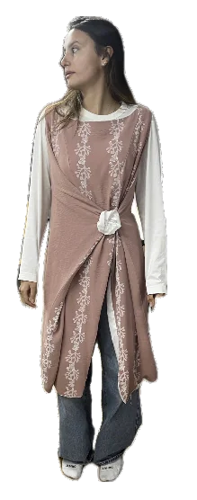
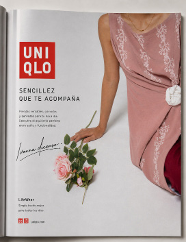
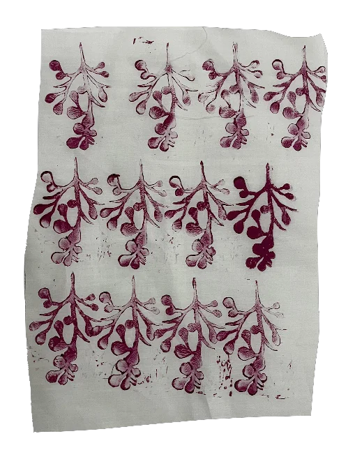
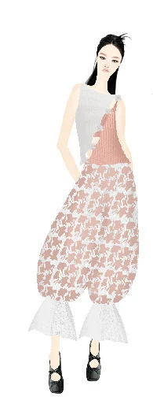
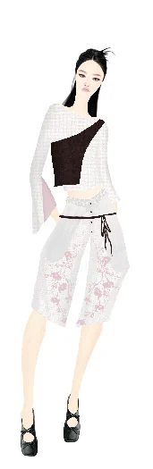

PROYECTO / 02
Upcycling · Comunicación de moda
UNIQLO Flower
Florecer en tu propio tiempo.

Una propuesta de colección de upcycling inspirada en Oubaitori: la filosofía japonesa de florecer a tu propio ritmo, sin compararte con los demás.
- DISCIPLINAS
- Investigación, upcycling, diseño de colección y comunicación visual
- ENFOQUE
- Propuesta conceptual de colección y comunicación. Proyecto independiente; no constituye una colaboración comercial con UNIQLO.
01 / EL CONCEPTO
Un nuevo comienzo.
Las flores japonesas y la primavera de Madrid dan forma a una identidad visual suave, fresca y contemporánea. El proyecto encuentra un punto de encuentro entre ambas culturas y lo traduce al lenguaje de la prenda.
Inspirada en UNIQLO Flower y su acercamiento a la naturaleza, la colección propone que la ropa también puede volver a florecer. A través del upcycling, prendas existentes encuentran nuevas formas, nuevos usos y una nueva vida.




02 / EL PROCESO
Transformar para florecer.
Dos camisas se convierten en una nueva prenda. El fruncido a mano da forma a flores de tela y el estampado botánico conecta el proceso textil con la naturaleza. Cada intervención parte de lo que ya existe.


Fotografía: Rodrigo Martino · Modelos: Martina Orozco e Irene Fu